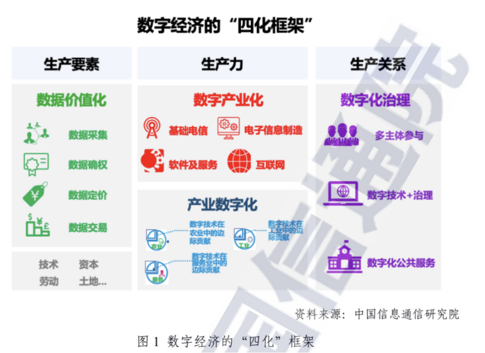
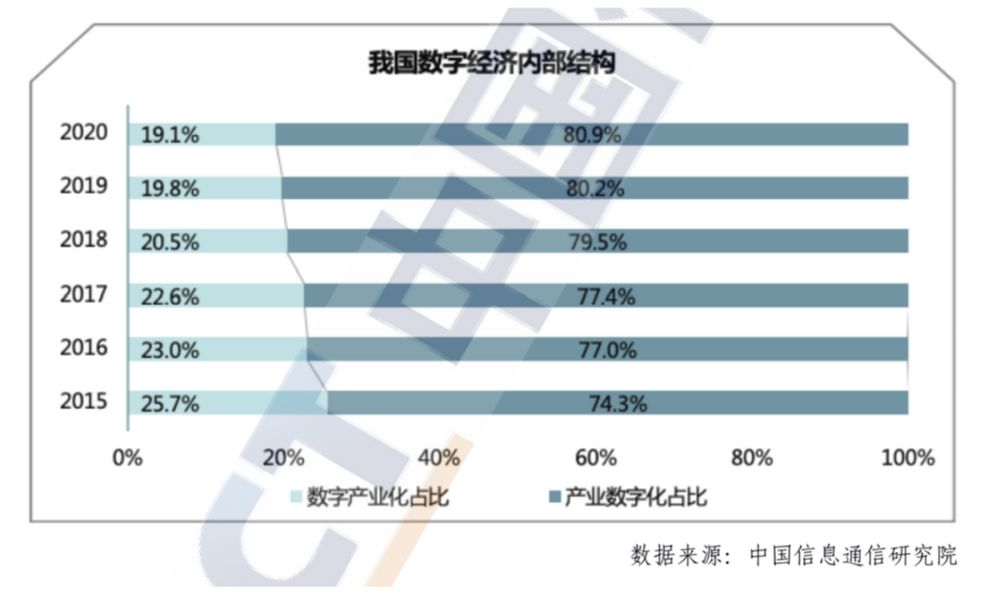
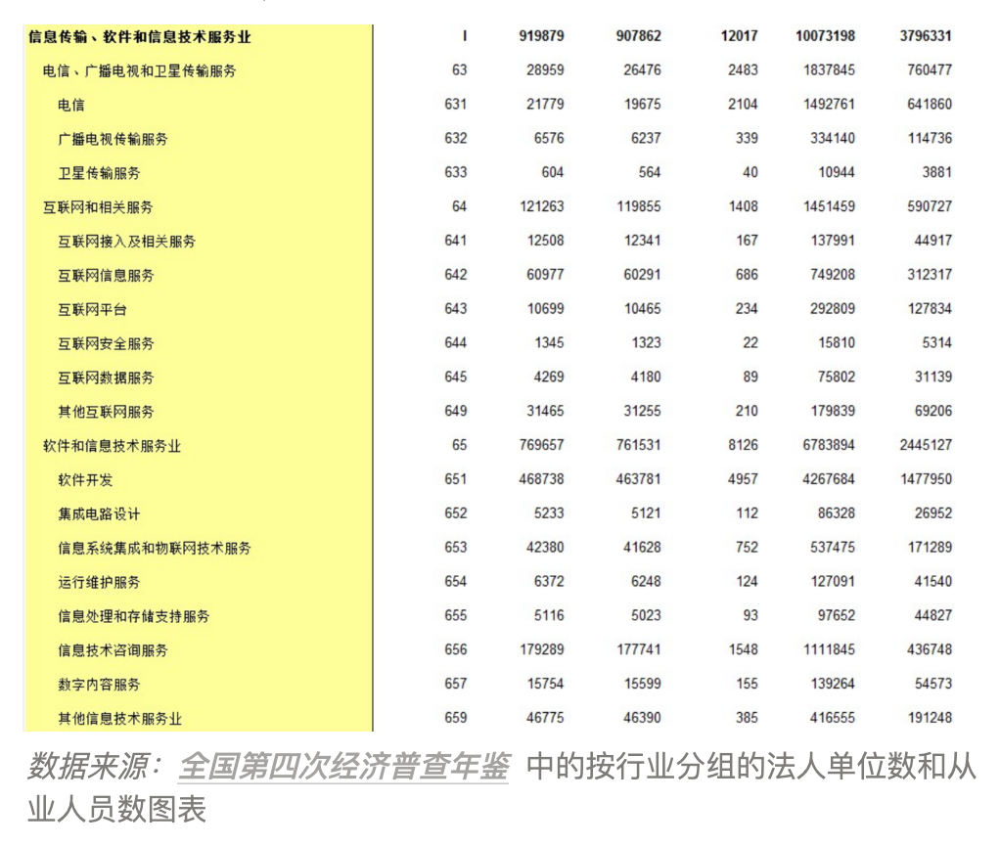
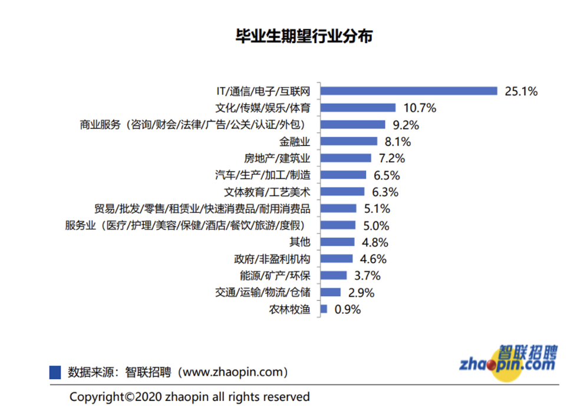
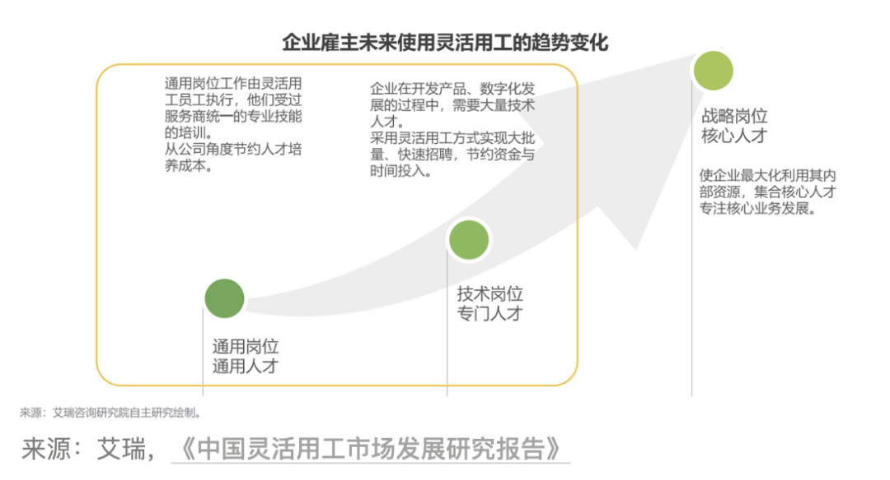

目录
引言
后疫情时代，中国将往何处去？这是每个中国人都深切关注和不断求索的重要问题。
改革开放以来的四十多年，中国的经济的年均增长率接近 10%，最终成为了世界第二大经济体。
上述狂飙突进的经济成就，是由市场经济的持续建设，城市化的不断深入和消费生态的繁荣发展所共同驱动的。
近年来，新冠疫情和复杂的国际局势逆转了全球化分工，黑天鹅事件频发，全球经济进入充满不确定性的新周期。
另一面，在线协作，远程办公，元宇宙，Web3，AIGC 等不断涌现的技术概念和应用正在重新定义人类的工作方式，生活方式，娱乐方式，创作方式和学习方式。
在衰退的阴影和未来的光明之间，中国的未来将往何处去？
答案是数字化，人类所栖身的有限的物理空间已经臻于完善，而由人类所打造的无限的数字空间则刚刚开始。
国务院于2023年2月27日印发的《数字中国建设整体布局规划》给出完整的回答：
建设数字中国是数字时代推进中国式现代化的重要引擎，是构筑国家竞争新优势的有力支撑。加快数字中国建设，对全面建设社会主义现代化国家、全面推进中华民族伟大复兴具有重要意义和深远影响。
此次数字中国整体规划和2021年印发的十四五规划一脉相承，互为补充，是中国未来十年发展脉络的最终解。
术语表
此处为本文的术语表，对本文中出现的一些专业术语及其解释和来源，如下表所示：
数字化未来数字化中国规划的具体落地即为中国数字化产业的发展方向。
本章采用宏观分析常用的 PEST 分析框架，从企业视角分析和解释，在当前的政治、经济、社会和技术背景下，数字化产业将以何种方式，走向何方。
PEST 分析是一种常用的宏观环境分析工具，广泛应用于市场调研、企业战略制定等领域。PEST是政治(Political)、经济(Economic)、社会(Social)和技术(Technological)四个方面的缩写。将这四个方面的宏观环境因素进行分析，可以帮助企业或组织更好地了解宏观环境，从而更好地制定战略和决策。
政治因素(Political)：政府的政策和法规对企业或组织的经营和发展有着重要的影响。
经济因素(Economic)：经济因素是指宏观经济环境对企业或组织的影响，如市场规模、经济周期、消费者购买力等。
社会因素(Social)：社会因素是指人口、文化、价值观念等因素对企业或组织的影响，如消费者需求、社会风气等。
技术因素(Technological)：技术因素是指科技的进步对企业或组织的影响，如新技术的应用、技术创新等。
PEST分析可以帮助企业或组织更好地了解宏观环境，从而制定出更加符合实际情况的战略和决策，提高企业或组织的竞争力。
政治面：重要引擎
政府将社会信息化和产业数字化作为现代化建设的重要环节，并为此设定了伟大的目标；
政府非常关注消费场景的线上线下融合和共享经济与平台经济的健康发展，并将其作为重点建设工程；
政府将全民数字素养与技能提升和企业数字能力提升设定为最重要的优先行动；
经济面：核心增长点
互联网从业人员和基于互联网平台的服务提供者超过 8400万人，在总就业人口中(7.5亿人)，占比超过10%；
中国灵活就业人员已达 2 亿人，占总体就业人口的四分之一强，非互联网场景的 1.2 亿人将持续转向相关共享经济互联网平台获取专业知识和寻找就业机会；
互联网和计算机行业成为大学新生和毕业生在专业和职业选择的首要选择，互联网行业每年将因此至少增加 250万个从业人员；
社会面：完全在线
我国网民规模达 10.32 亿，手机网民规模达 10.29 亿，在线办公用户数量达到 4.68亿；
我国未成年网民已达 1.83 亿，互联网普及率为 94.9%，远高于成年群体互联网普及率；
中国互联网已经基本达到潜在用户的上限，随着人口结构变化和代际交替，互联网普及率将继续升高；
在中国和全球范围内，混合办公和灵活用工将成为企业未来办公的重要趋势；
技术面：工具繁荣
在线办公和远程协作相关工具和服务正在快速增长，正在逐步覆盖大多数办公场景和工业场景；
国内现有专业从业者中，专用设备(桌面电脑和笔记本电脑)的使用比例，数字技能和工具的掌握程度相对较低；
政府的政策支持和互联网相关行业从业者的不断增加，将推动互联网相关数字技能和工具的快速普及；
在国家推动数字化转型的政策规划和公民拥抱数字化生活方式和工作方式的社会变革的双重作用下，未来工作者的工作选择和工作方式将快速转向数字化、在线化和协同化，这将对现有各行业从业者的工作模式，工作关系，技能结构形成巨大冲击；而上述过程，将重塑中国的社会生态，工作体系和产业结构。
数字化建设
前文摘录了数字化建设规划的核心内容，本章将对数字化场景下的具体数字政策进行更加详细的引用，其中的明确要求和发展指标都将成为数字产业从业者的指路明灯。
数字中国建设整体布局规划
全面提升数字中国建设的整体性、系统性、协同性，促进数字经济和实体经济深度融合；
以数字化驱动生产生活和治理方式变革，为以中国式现代化全面推进中华民族伟大复兴注入强大动力；
到2025年，基本形成横向打通、纵向贯通、协调有力的一体化推进格局，数字中国建设取得重要进展；
数字基础设施高效联通，数据资源规模和质量加快提升，数据要素价值有效释放，数字经济发展质量效益大幅增强；
政务数字化智能化水平明显提升，数字文化建设跃上新台阶，数字社会精准化普惠化便捷化取得显著成效，数字生态文明建设取得积极进展；
数字技术创新实现重大突破，应用创新全球领先，数字安全保障能力全面提升，数字治理体系更加完善，数字领域国际合作打开新局面；
到2035年，数字化发展水平进入世界前列，数字中国建设取得重大成就。数字中国建设体系化布局更加科学完备，经济、政治、文化、社会、生态文明建设各领域数字化发展更加协调充分，有力支撑全面建设社会主义现代化国家。
十四五总体规划
充分发挥海量数据和丰富应用场景优势，促进数字技术与实体经济深度融合，赋能传统产业转型升级，催生新产业新业态新模式，壮大经济发展新引擎；
适应数字技术全面融入社会交往和日常生活新趋势，促进公共服务和社会运行方式创新，构筑全民畅享的数字生活；
将数字技术广泛应用于政府管理服务，推动政府治理流程再造和模式优化，不断提高决策科学性和服务效率；
坚持放管并重，促进发展与规范管理相统一，构建数字规则体系，营造开放、健康、安全的数字生态
信息发展重要指标
到 2025 年，全国高新技术企业数量将从 27.5 万家增长到 45 万家，增长率超过 60%；
到 2025 年，我国数字经济核心产品增加值占GDP比重将从 7.8% 增长到 10%，增长率超过 20%；
到 2025 年，关键业务环节全民数字化的企业比例将从 48.3% 增长到 60%，增长率接近20%；
到 2025 年，我国信息消费规模将从 5.8 万亿元增长到 7.5 万亿元，增长率接近 30%；
相关重点工程
政府将通过信息消费扩容工程，推进传统产业优化升级，实施文化产业数字化战略，促进新业态新模式发展；
政府着力以信息技术健全基本公共服务体系，改善人民生活品质，让人民群众共享信息化发展成果；
相关优先行动
政府为全民数字素养与技能提升行动设定的总体目标为：
到 2023 年，全民数字技能教育教学资源体系初步形成，信息弱势群体数字素养与技能明显提升；
到 2025 年，全民数字技能教育培训广泛普及，让人民群众共享信息化发展成果；
政府为企业数字能力提升行动设定的总体目标为：
到 2023 年，大中型企业数字能力发展体系初步建成，融合发展新模式新业态蓬勃涌现；
到 2025 年，企业数字能力全面提升，大型企业整体步入集成融合、生态创新阶段，中小企业质量效益显著增强；
数字化产业
上述国家战略级政策规划为产业界指明了未来数字化产业发展的康庄大道。
而宏观的数字化产业概念下，包含哪些具体行业和产业，这些产业彼此彼此之间又是何种关系，我们将结合数字化政策和相关行业报告，在此部分详细介绍。
数字经济结构
数字经济包括以下四部分：数字产业化，产业数字化，数字化治理，数据价值化：
按照数字经济定义，数字经济包括数字产业化部分和产业数字化部分两大部分，其测算框架为：

数字经济总体情况
据工信部数据，2020年中国数字经济规模扩张到 39.2 万亿元，数字经济占GDP比重为 38.6%；
2020 年数字产业化规模达到 7.5 万亿元，占 GDP 比重为 7.3%，产业数字化规模达到 31.7 万亿元，占 GDP 比重为31.2%；

数字化产业运行情况
据工信部数据，2021年，我国规模以上互联网和相关服务企业完成业务收入15500亿元，同比增长21.2%，增速比上年加快8.7个百分点，两年平均增速为16.8%；
据工信部数据，2021年，上述企业共实现营业利润1320亿元，同比增长13.3%，增速比上年加快0.1个百分点。营业成本同比增长16.1%，增速比上年提高13.7%；
2021年，全国软件和信息技术服务业规模以上企业超4万家，累计完成软件业务收入94994亿元，同比增长17.7%，两年复合增长率为15.5%；
2021年，软件业利润总额11875亿元，同比增长7.6%，两年复合增长率为7.7%；主营业务利润率提高0.1个百分点达9.2%
根据国家信息中心数据，2021年共享经济市场交易额达到36881亿元；
数字产业就业情况
根据全国第四次经济普查数据，(下图倒数第二列) 2018年互联网和相关服务从业人数为145万人，软件和信息技术服务业从业人数为678万人，共计823万人；

根据国家信息中心数据，2020年共享经济参与者人数约为8.3亿人，其中服务提供者约为8400万人；
国家统计局相关负责人日前表示，截至2021年底，中国灵活就业人员已经达到2亿人；
中国人民大学灵活用工课题组报告显示，2021年中国有61.14%的企业在使用灵活用工，比2020年增加5.46%，企业倾向于扩大灵活用工规模；
根据艾瑞相关报告，产品销售(32.7%)，技能输出(28.5%)，投资经营(17.7%)是我国白领群体灵活就业的主要方式；
根据教育部数据，2022年的全国高校毕业生人数将首次超过1000万人，就业形势严峻；
根据智联招聘调研，将会有 25%(2021年数据)以上的毕业生选择进行互联网行业

互联网服务
一般定义的数字信息产业(即前述数字经济中数字产业化的部分)由电信、广播电视和卫星传输服务、互联网和相关服务和软件和信息服务及相关产业构成。
而上述数字化服务的载体则是互联网这一泛在通用的传输媒介，理解互联网服务的发展和运转情况，也就清楚了数字化服务的发展情况。
互联网普及率不断提升（截止2021.12）
就像水和电一样，互联网服务已经成为 10 亿中国人须臾不可缺的基础设施，对此，国家也提出了新的治理策略，确保互联网服务的稳定安全，便利可用
我国网民规模达 10.32 亿，较 2020 年 12 月增长 4296 万，互联网普及率达 73.0%，较 2020 年 12 月提升 2.6 个百分点；
截至 2021 年 12 月，我国非网民规模为 3.82 亿，较 2020 年 12 月减少 3420 万，非网民用户主要分布在农村地区和年长用户中；
我国非网民仍以农村地区为主，农村地区非网民占比为 54.9%，高于全国农村人口比例 19.9 个百分点；
我国 60 岁及以上非网民群体占非网民总体的比例为 39.4%，较全国 60 岁及以上人口比例高出 20 个百分点；
我国手机网民规模达 10.29 亿，较 2020 年 12 月增长 4373 万，网民使用手机上网的比例为 99.7%；
使用台式电脑、笔记本电脑、电视和平板电脑上网的比例分别为 35.0%、33.0%、28.1%和 27.4%；
我国未成年网民已达 1.83 亿，互联网普及率为 94.9%，远高于成年群体互联网普及率；
互联网应用中，在线办公的用户规模增长最为明显，较 2020 年 12 月增长 1.23 亿；
基础互联网服务增速趋缓
伴随着十多年来移动互联网的高速发展，当前用于满足用户日常需求的基础互联网服务已经达到峰值，接近移动互联网的使用率(99.7%)：
用于满足社交沟通需求的即时通讯服务(97.5%)使用率达到峰值；
用于满足通用信息搜索和信息获取的搜索引擎(80.3%)和网络新闻(74.7%)
用于满足在线购物和消费需求的网络购物(81.6%)和网络支付(87.6%)服务使用率接近峰值；
用于满足娱乐需求的网络视频和短视频服务(94.5%)服务使用率接近峰值；
垂直互联网服务方向走向分化
对于当前非基础场景的互联网服务，其发展趋势受到经济环境和疫情营销走向分化：
用于满足居家办公基础需求的在线办公(45.4%)服务使用率快速增长，接近50%；
用于满足速食快餐需求的网上外卖(52.7%)服务使用率首次超过50%；
用于满足旅游出行需求的在线旅游预定(38.5%)服务在2021年疫情好转后有所回暖；
数字化变革
2021年，互联网使用人数达到十亿人，消费互联网的用户规模，发展状态和市场预期也由此达到顶峰，鲜花着锦，烈火烹油，环球同此凉热。
而在随后的2022年，卷土重来的新冠疫情和日益复杂的国际局势也在侵蚀着全球化市场，而附着其上的消费互联网也备受打击，损失惨重。
站在2023年的当下，中国互联网的未来去往何处，是建设数字中国过程中所必须要思考和回答的深刻问题。
未来的工作方式前瞻
随着新冠疫情的不断持续以及互联服务的发展和从业人员规模的拓展，我们的工作方式正在面临深刻的变革：
根据艾瑞报告，企业会逐步扩大对灵活用工业务的配置，增加通用岗位和技术岗位灵活用工员工的数量；

根据世界经济论坛报告，为了处理新冠疫情所带来不利影响，调研的雇主计划推出以下举措：
84% 的雇主计划推进工作流程化的数字化(如使用数字化工具，视频会议)；
83% 的雇主计划提供更多远程工作机会；
50% 的雇主计划推进工作任务的自动化

根据微软报告，混合办公(即同时支持远程办公和本地办公的)将成为主要趋势
麦肯锡在调研报告中指出，数字相关技能将成为作为公民的基础能力
专业互联网的崛起
专业互联网是指传统在线上场景所存在的工作资料和工作流程逐渐虚拟化和线上化之后，所产生的内容、服务网络以及活动参与者彼此之间的交换，分享和协作等交互流程。
可以从生产要素，生产关系生产力三个基础环节分别解释专业互联网：
从生产要素视角出发，专业互联网即价值互联网，侧重于生产要素的价值流通环节
从生产关系视角出发，专业互联网即协作互联网，侧重于生产关系的组织协作体系
从生产力视角出发，专业互联网即创作互联网，侧重于生产力的数字创作表达
专业互联网是数字时代工作方式演化的推动力，最终帮助互联网用户从消费者变成创造者。
从而在互联网上，再造一个更加繁荣的集创作，生产和消费为一体的数字产业生态体系。
而上述面向专业用户的专业信息、专业服务和专业工具和专业组织，由于专业场景天然的复杂性，必将彼此合作，互相连接，最终共同构成专业互联网的行业生态。
按照上述场景，可以将专业市场的服务提供者归纳为以下四种类型：
专业信息聚合者：整合并提供如行业专业内容、行业专业知识、行业职业信息、行业企业信息等专业信息
专业工具开发者：开发和维护如沟通协作工具、专业生产工具、组织管理工具、业务管理工具等专业工具
专业服务提供者：支持并提供如职业教育服务、职业中介服务、人力资源服务、行业解决方案等专业服务
专业社区建设者：建设和运营如专业內容社区、产品分享社区、用户反馈社区、职场交流社区等专业社区
按照所扮演的身份，可以将专业互联网的所有参与者概括为以下类型：
数字工具的繁荣时代
而在上述专业互联网参与者中，数字工具是数字内容，数字产品和数字服务的表现载体和实现方式，对于专业互联网的繁荣发展起着至关重要的作用。
下图为 FutureForce 团队所整理的数字工具全景图，罗列收录了针对不同场景不同受众的具有代表性的数字工具生态。
FutureForce 旨在利用数字工具，帮助年轻人参与数字经济，帮助职业从业者打造职业的第二曲线。
首先需要说明以上全景图的页面框架和展现维度：
纵轴：包含专业数字工具领域下，效率流程，资源管理，内容分享三种核心场景，并将场景拆分成了数个子环节，用于区分数字工具所表现的数字信息形态(任务，文字，图片，音视频等等)。
横轴：包含专业数字工具受众下，通用场景和专业场景两个主要使用场景，并将场景拆分成了数个子场景，用于区分受众在使用数字用户时的具体身份和具体需求。
在前述核心场景和用户场景的框架下，我们归类整理了相关工具，关于此图的详细介绍可以参考 漫游周刊 第8期 | 数字时代的工具
效率流程：此场景主要包含待办任务，文本管理，链接管理三个子环节
链接管理和文本管理是既是效率流程的中间产物，也是资源管理的具体形式，为此两个场景的所共有，在下文资源管理中进行详细说明。
资源管理：此场景主要包含链接管理，文本管理，图片管理，音视频管理和文件管理五个子环节
所以因为数字资源存在方式的一致性，数字时代的资源管理工具最终彼此混同，只有用户场景之分，而很难有具体媒介之分。
内容分享：此场景主要包含网页内容，图文内容，音视频内容和信息聚集(策展内容)四个子环节
资源是内容的素材，内容是资源的产品，不同的加工流程和制作水平，决定了内容的质量和传播性，然而，上述定义是基于工作流程的区分而非信息形态的具体区分，换言之，资源即内容。
数字工具领域下的工具多如繁星，不可胜数，篇幅所限，无法详述。更希望通过结构化的指南方式，为读者简要梳理数字时代的工具，并为从业者和感兴趣的朋友提供一个全景的视角，重新观察和思考我们所熟悉的数字工具及其行业生态。
探索从未停止
互联网已经改变了我们的生活和工作方式，而数字中国则将更加美好，它既包含着中国政府对于中国式现代化和中华民族伟大复兴的伟大蓝图，也蕴含着未来十年中国经济增长和社会发展的所有希望。在数字中国的建设中，每个中国公民都将是贡献者和参与者，而我们也必须对这一宏伟蓝图达成共识，做好准备。
FutureForce：未来原力
FutureForce DAO (未来原力) 是面向数字创意从业者的专业组织，致力于成为中国的 AngelList + Github；
通过更符合灵活工作趋势的 DAO 组织形式，联合全网的专业用户，共创全互联网的工具库和行业指南；
帮助全中国的年轻人参与数字经济，发展职业生涯。
本文基于现有互联网上的公开资料进行整理，将纷繁复杂的线索和信息连缀成线，描绘成图，希望能够对身在数字行业的从业者或者希望对于国家政策有更多理解的普通读者有所帮助，对于中国数字经济产业的现状有所了解，同时也能中国数字化未来的发展方向有所启示。
参考资料
最后，我们要感谢各位参与本文研究的人员和提供参考资料的机构。感谢你们的支持和帮助，使我们能够更好地完成本文的研究和撰写。以下资料为本研究的参考文献，大部分都为公开发布的政策规划和公开报告，部分未非公开报告，如果需要可以联系 FutureForce DAO 团队 。用户可以根据自己的需求对这些资源进行查阅和使用(扫描下图二维码加群获取报告)，感谢您的阅读。
政策信息：
中华人民共和国国民经济和社会发展第十四个五年规划和2035 年远景目标纲要
“十四五”国家信息化规划
数字中国建设整体布局规划
上海城市数字化转型标准化建设实施方案
互联网发展状况：
第49次中国互联网络发展状况统计报告
中国共享经济发展报告（2022）
中国共享经济发展报告（2021）
2021数字经济全景白皮书
IDC：千亿级工业互联网市场到底在哪里？
行业发展状况：
2020年人社统计公报发布全国就业人员达7.5亿
中国灵活就业者已达2亿人线上工作受到年轻人追捧-新华网
2021年互联网和相关服务业运行情况
2021年软件和信息技术服务业统计公报
中国经济普查年鉴-2018
2021大学生就业力调研报告发布-新华网
【智联】2022年大学生就业力报告
职业变革趋势：
领先2021未来人才趋势报告
WEF_ Future_of_Jobs_2020
Ml_Future_of_Work_Report
Defining the skills citizens will need in the future world of work
领英2021未来人才趋势报告
混合办公：下一个颠覆性趋势
中国灵活用工市场发展研究报告
中国远程工作市场发展研究报告
内容来源：FutureForce DAO